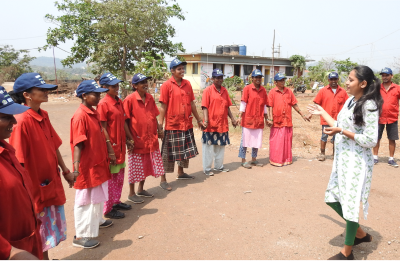
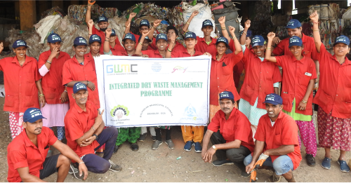
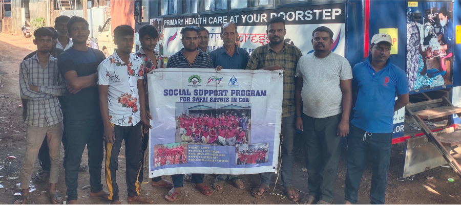
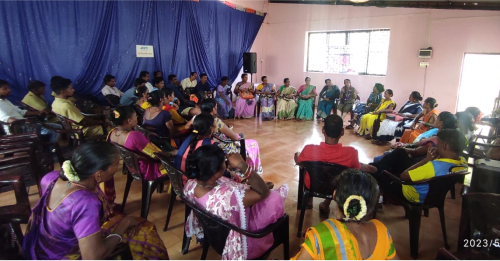
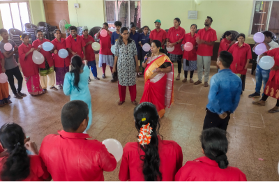

At Sampurn(e)arth, we are deeply committed to the upliftment and
empowerment of Safai Saathis (waste workers) across all the regions we
serve. Recognizing their crucial role in transforming waste into
livelihoods, our social support services are designed to ensure that
their work is dignified, sustainable, and seamlessly integrated into
formal systems throughout the supply chain.
Empowerment Through Knowledge
Our dedicated teams engage in ongoing efforts to formalize and empower
informal waste workers. We understand that knowledge is a powerful
tool for transformation. To this end, we conduct regular
capacity-building sessions that equip these workers with essential
skills and awareness. These sessions cover a broad range of topics,
including waste segregation techniques, safety protocols, and health
awareness. By empowering workers with knowledge, we enable them to
perform their duties more effectively and safely.
Health camps are another vital component of our support strategy. These camps are organized regularly to ensure that workers have access to basic health services. We address common health issues, provide medical check-ups, and distribute necessary medications. Beyond physical well-being, these health camps also play a crucial role in restoring the dignity of waste workers by showing them that their health and welfare matter.
Health camps are another vital component of our support strategy. These camps are organized regularly to ensure that workers have access to basic health services. We address common health issues, provide medical check-ups, and distribute necessary medications. Beyond physical well-being, these health camps also play a crucial role in restoring the dignity of waste workers by showing them that their health and welfare matter.
Unity in Self-Help Groups (SHGs)
We believe in the strength of unity, and this principle is embodied in
our support for Self-Help Groups (SHGs). These groups are more than
just collectives; they are platforms for decision-making,
trust-building, and camaraderie. By fostering a sense of community and
mutual support, SHGs empower workers to take collective action and
make informed decisions about their work and lives.
Within these groups, workers can share their experiences, challenges, and successes, creating a supportive network that promotes resilience and independence. The collective power of SHGs enables workers to negotiate better working conditions, access credit facilities, and undertake community projects. This unity propels them toward greater independence and improved livelihoods.
Within these groups, workers can share their experiences, challenges, and successes, creating a supportive network that promotes resilience and independence. The collective power of SHGs enables workers to negotiate better working conditions, access credit facilities, and undertake community projects. This unity propels them toward greater independence and improved livelihoods.


Government Schemes and Identification
Integration into formal systems is a critical aspect of our social
support services. We ensure that each worker is enrolled in relevant
government schemes that provide social security and legitimacy. These
schemes offer a range of benefits, including health insurance, pension
plans, and financial assistance. By connecting workers to these
schemes, we help secure their future and enhance their economic
stability.
Official identification cards are issued to every worker, symbolizing acknowledgment and inclusion. These ID cards are more than just pieces of paper; they represent recognition of their contributions and integration into formal waste management systems. With these IDs, workers can access various government services and benefits, enhancing their sense of belonging and security.
Official identification cards are issued to every worker, symbolizing acknowledgment and inclusion. These ID cards are more than just pieces of paper; they represent recognition of their contributions and integration into formal waste management systems. With these IDs, workers can access various government services and benefits, enhancing their sense of belonging and security.

Advocacy & Awareness for Scrap Dealers
Our commitment extends beyond empowering individual workers to
advocating for systemic change within the informal scrap markets. We
focus on raising awareness about responsible waste management
practices among scrap dealers and their workers. By promoting the
proper disposal of non-recyclables and discouraging harmful practices
like burning waste, we strive to create a more sustainable and
environmentally friendly waste management ecosystem.
We work closely with scrap dealers to formalize and organize their operations. This includes training them on efficient sorting and processing techniques, helping them comply with regulatory requirements, and facilitating their integration into the broader recycling network. Through these efforts, we aim to elevate the entire informal sector and promote sustainable practices that benefit both workers and the environment.
We work closely with scrap dealers to formalize and organize their operations. This includes training them on efficient sorting and processing techniques, helping them comply with regulatory requirements, and facilitating their integration into the broader recycling network. Through these efforts, we aim to elevate the entire informal sector and promote sustainable practices that benefit both workers and the environment.


Implementation Across Our Supply Chain
-
Workers at the PRF Plant :
Our teams at the Plastic Recycling Facility (PRF) play a crucial role in secondary segregation of Mixed Soft Plastic into essential categories for processing. These workers operate the Fatka, Agglomeration, and Extruder units, which are vital for transforming plastic waste into reusable lumps and granules. Their work is essential for the efficient processing and recycling of plastic materials.
-
Workers at Supplying MRF Plants :
In collaboration with municipality-owned Material Recovery Facilities (MRFs), we support workers engaged in the primary segregation of post-consumer waste. These MRFs handle waste streams from both urban centers and village panchayats. By ensuring efficient primary segregation, these workers contribute to the effective management of waste and the overall sustainability of our operations.
-
Door-to-Door Collection Workers Supplying to MRFs :
These frontline workers facilitate the daily collection of waste, ensuring that mixed dry waste is segregated at the source before it reaches MRFs. Their efforts streamline the flow of waste from urban and rural communities, ensuring that it is efficiently processed and recycled. Through training and support, we ensure that these workers are well-equipped to handle their responsibilities.
-
Independent Waste Pickers & FerryWallas :
Operating around dumping grounds, these workers play a vital role in collecting and recycling waste. We incentivize them to collect Mixed Flexible Plastic and offer opportunities to join existing MRF operations. By integrating these workers into formal systems, we enhance their livelihoods and contribute to more effective waste management practices
-
Scrap Yard Workers :
Our initiatives support workers engaged in primary segregation activities at partner scrap yards. These workers, often marginalized and invisible, benefit from our social support programs. By providing training, resources, and support, we help these workers improve their working conditions and integrate into the broader recycling network.
At Sampuen(e)arth, our social support services are designed to
uplift Safai Saathis and create a more inclusive and sustainable
future for waste management. Through genuine engagement and
empowerment, we strive to bring about lasting positive change in the
communities we serve. Our commitment to the well-being and dignity
of waste workers is at the heart of our mission, driving us to
continuously improve and expand our support services.